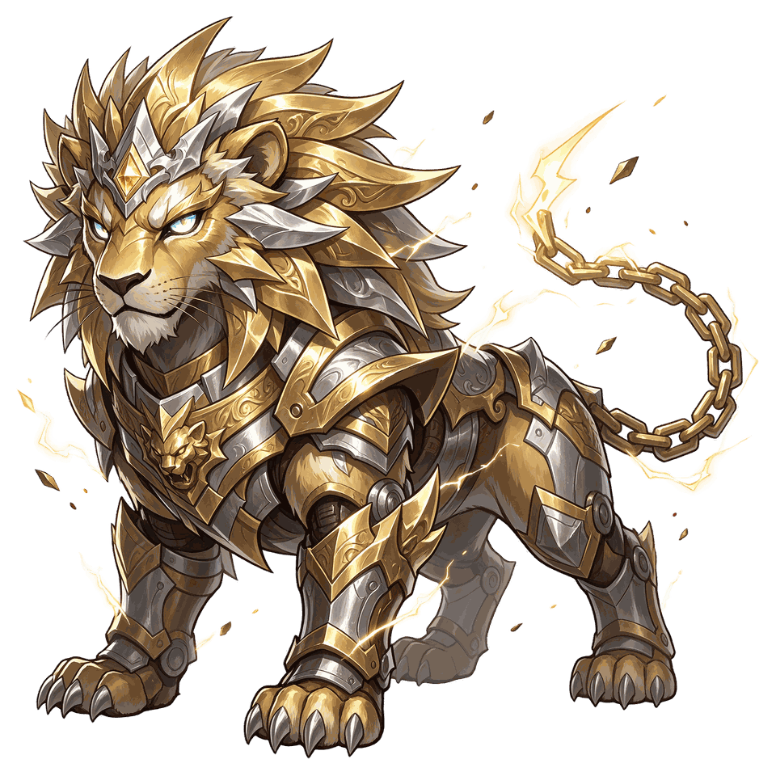
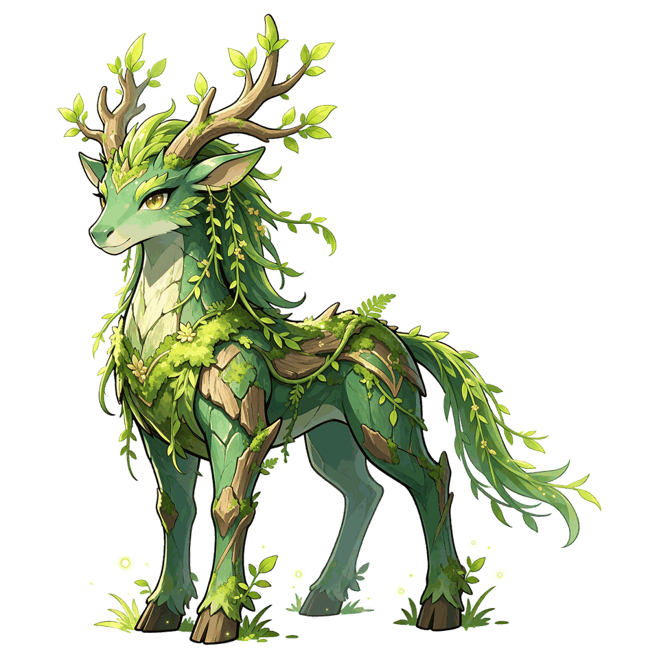
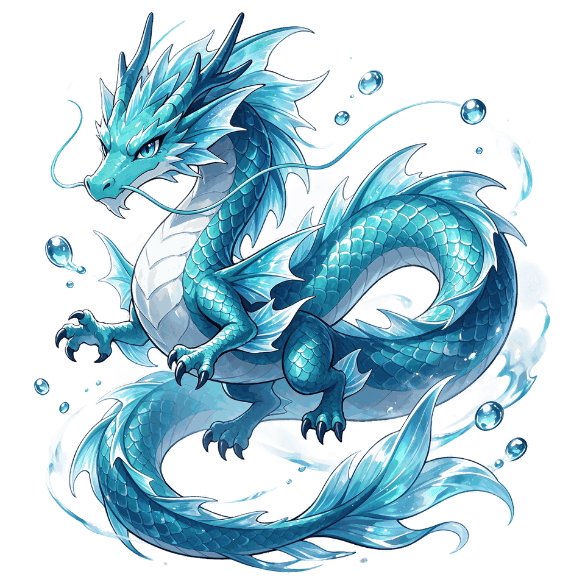
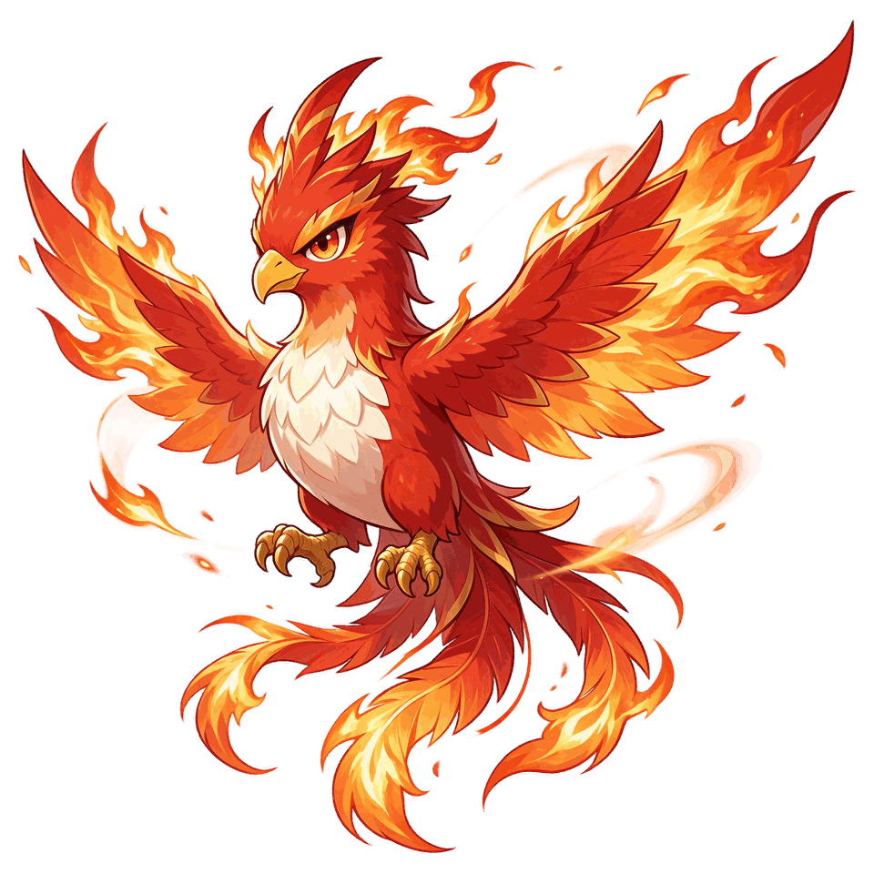
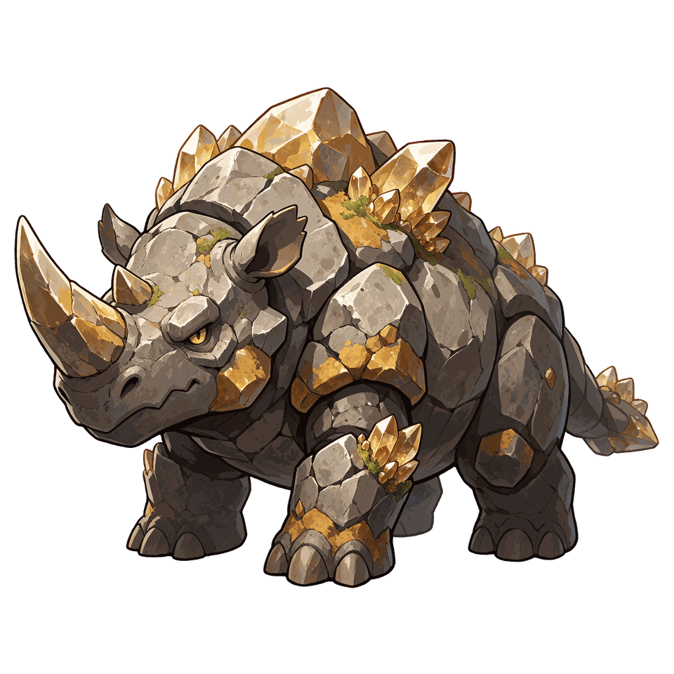

金

锋金雷狮
金行神兽 · 机械系 · 威风系
鬃毛是一圈上扬的金属刀刃，全身披挂鎏金与白银板甲，尾巴化成链条闪电。走起路来金属碰撞声先到，压制力最强的一只。
金 · 木 · 水 · 火 · 土，五只神兽级伙伴。立绘为赛璐璐画风，纯静态 PNG，960×960 透明底，可直接当游戏宠物图用。

金行神兽 · 机械系 · 威风系
鬃毛是一圈上扬的金属刀刃，全身披挂鎏金与白银板甲，尾巴化成链条闪电。走起路来金属碰撞声先到，压制力最强的一只。

木行神兽 · 草系 · 唯美系
鹿形身躯覆着树皮与苔藓甲片，鹿角分叉如老树，角尖还在长新叶。蹄下生草，走到哪里哪里就绿一片。

水行神兽 · 水系 · 威风系
琉璃般的青蓝鳞甲，背脊一排半透明水鳍，S 形游动时水珠环绕。脾气冷，出手快，是五只里最像"高手"的一只。

火行神兽 · 火系 · 帅气系
赤红金边的火凤凰，翼羽末端是跳动的火舌，三根火羽长尾拖在身后。飞起来半空中全是火星。

土行神兽 · 地系 / 土系 · 威风系
全身是层叠的岩石板块，肩背长着土黄晶簇和青苔，鼻端一支带裂纹的粗岩角。站那儿不动就有压迫感。